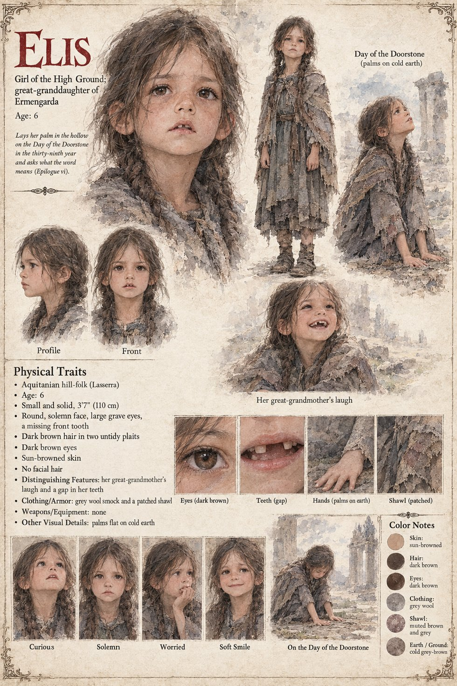

Elis
Girl of the High Ground · great-granddaughter of Ermengarda · 6 years old in the thirty-ninth year
A girl of six, the great-granddaughter of the miller's widow Ermengarda, in the High Ground in the thirty-ninth year. On the twentieth of Garren, the Day of the Doorstone, the children of the High Ground go down in a long straggling line to the empty hollow in the green at Vilarnau and each lays a palm flat on the earth, counts ten breaths and says a word that has no meaning in the dialect and is the first word any of them learns, and Elis goes down with the others and does the same. She is a small, solemn, gap-toothed child with her great-grandmother's laugh and a habit of asking questions that nobody can answer.
That evening, over the porridge, she asks her mother what the word means. Her mother, who is busy, says that it means a doorstep: it is what one says, in the High Ground, of a place where a thing begins, the sill of a house, the first stair, the foot of a hill, the place where a traveller puts down his pack. Elis considers this and says that it is a funny sort of word for a stone. Her mother says that it is a funny sort of stone. Then, because the child is still looking at her with the large grave attention of a person who has been given part of an answer and wishes for the rest, she says the one thing that she was told by her own mother, who was told it by Gersenda, and has never believed: that it is the name of the place where a man came in from very far away, and was made welcome, and one spring walked out of it toward the east, like a man with somewhere to be. It is the last scene of the manuscript, and the manuscript does not say whether the child believes it.
Case 0202 has her in the same year, at the same age, at Solan's Fire on the twenty-eighth of Havren, asking her mother what another word, nago, means and being told it means a bite to eat; Elis's Mother is its page, and the story she tells afterward is the same one. The manuscript gives Elis her age, her name, her laugh, her gap and her questions. The sheet's 3 ft 7 in, round solemn face, large grave eyes, two untidy dark brown plaits, sun-browned skin, grey wool smock and patched shawl are its own, and so are its expression panels Curious, Solemn, Worried and Soft Smile. Neither page works out which woman of Ermengarda's line is the great-grandmother who feeds her in Case 0202, or the mother's mother who was told the story by Gersenda in this one.